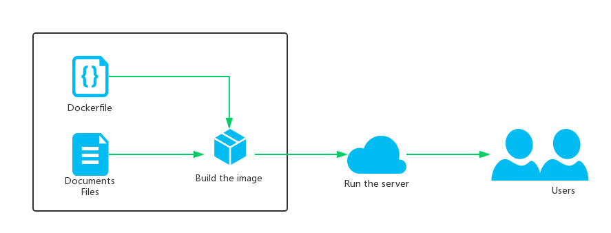

Docker2Gitbook
Intro
Quickly set up the Gitbook Serve online & focus on creating knowledge.
The purpose of this project is to simplify the construction and online of Gitbook . So you need to know some basic knowledge about Gitbook data structure . (Like knowing the function of SUMMARY.md)
How to use
- You should have installed the
docker. - Clone the project from the Github.
git clone git@github.com:copriwolf/Docker2Gitbook.git- Run the following command to make up a folder named
docs.
cd Docker2Gitbook
mkdir docs- Put your documents to the docs(e.g: README.md,SUMMARY.md)
- Run the following command, And wait for the process done.
docker build . -t 'docker2gitbook'- Run the following command, And you can find the Gitbook Server is online.
docker run -d -p 4000:4000 docker2gitbookProject Flow
- Put the
Document Datato the folder. - Build the docker images with
Dockerfilefrom the Github. - Run the Gitbook Server

中文说明
简介
快速构建gitbook服务容器，让你专注于创作本身。
本项目的意图在于把gitbook的构建与上线流程精简化，让用户专注与创作本身，所以你需要先了解Gitbook的数据结构基本知识（使用SUMMARY.md来规范层级关系等）。
使用方法
- 使用本项目前要确保已经安装了
docker. - 把本项目克隆到本地上
git clone git@github.com:copriwolf/Docker2Gitbook.git- 进入项目文件夹，并创建一个
docs子文件夹用于存放文章数据。
cd Docker2Gitbook
mkdir docs- 把你的文章数据(如README.md,SUMMARY.md)放到子目录
docs中 - 运行以下命令构建你的Gitbook容器(
build),并等待构建完成。
docker build . -t 'docker2gitbook'- 运行以下命令把Gitbook网站开放到本地的4000端口,并后台自动运行服务器
docker run -d -p 4000:4000 docker2gitbook项目流程
- 把
文章数据放置在子文件夹。 - 通过本项目的
DockerFile文件构建了一个docker镜像 - 通过运行Docker服务来运行Gitbook服务。
注意事项
- 如何查看当前服务器是否在运行中？ 在本地运行以下命令，查看是否有回传结果，有即说明服务器在运行中。
docker ps | grep docker2gitbook- 我不想开放4000端口，我想开放5500端口可以吗？
可以的，docker提供了端口映射功能，我的脚本默认把容器内的4000端口映射到本地的4000端口，如果你需要，可以改为其他的，你可以修改
使用方法的第6步
docker run -d -p 5500:4000 docker2gitbook- 在国内加载npm源的速度太慢了，有没有办法加速？
使用国内的淘宝镜像npm源来替代，能有显著的速度提升，请在执行
使用方法前在，本地的项目根目录运行以下命令。
mv dockerfile-zh dockerfile
- 主机的内存配置不够，在gitbook install这一步等待时间长，最后显示
KILLED，然后安装失败，如何解决？ 分布安装gitbook插件可以解决这个情况。请在执行使用方法前在，本地的项目根目录运行以下命令。
mv dockerfile-zh dockerfile